Study.leader 지정 여부로 합니다./admin이 막힙니다.main.dart를 화면별 파일로 나눴습니다(동작 변화 없음).| 대상 | 동작 |
|---|---|
must_change_password=true 회원의 로그인·로그아웃·CSRF·비밀번호 변경·/api/me/ | 허용 (프론트가 세션 복원 시 “변경 필요” 상태를 알아야 함) |
| 공개 API (학기, 게시판) | 비로그인 사용자와 똑같이 허용 |
| 로그인이 필요한 나머지 API | 403 {"code":"password_change_required"} → 프론트는 어느 화면에서든 강제 변경 창을 띄움 |
/admin/ (로그아웃 제외) | “비밀번호를 먼저 변경해주세요” 안내 페이지(403) |
| 현재 비밀번호와 같은 값으로 변경 | 거절. 초기 비밀번호 kuics!학번도 조합 규칙을 만족해 우회가 가능했음 |
createsuperuser로 만든 계정 | 강제 대상 제외 (첫 운영진이 Admin에 못 들어가는 문제 방지) |
함께 모든 API 오류를 {"code","message","fields"} 형식으로 통일했고, 강제 변경 창에는 다른 계정으로 바꿀 수 있게 로그아웃 버튼을 넣었습니다.
| 요구사항 | 구현 | API |
|---|---|---|
| 스터디장만 접근하는 관리 화면 | 상단 메뉴·메뉴 서랍·홈/마이페이지 패널에서 진입. 정회원에게는 숨김, 서버는 IsStudyManager로 재검사 | GET /manage/studies/ |
| 담당 스터디 참여자 명단 | 참여자 탭: 이름·학번·참여 상태(변경 가능)·출석 요약·출석률·과제 제출 수 | GET /manage/studies/{id}/, PATCH /studies/{id}/participations/{pid}/ |
| 회차별 출석 체크 및 수정 | 회차 추가·수정·삭제, 출석 체크 화면(출석/지각/결석/공결, 메모, 미기록 모두 출석, 저장 전 나가기 확인) | POST /manage/studies/{id}/sessions/, GET·PUT /manage/sessions/{id}/attendance/ |
| 참여자별 출석 현황 | 참여자×회차 현황표(가로 스크롤)와 출석률 | GET /manage/studies/{id}/attendance/ |
| 과제 등록: 제목, 설명, 제출 기한 | 과제 등록·수정·삭제 창(한국어 날짜·시각 선택) | POST /manage/studies/{id}/assignments/, PATCH·DELETE /manage/assignments/{id}/ |
| 제출 내역 취합·조회: 제출자, 제출 시각, 파일 | 과제별 제출 현황: 참여자 전원 행, 파일 이름·크기·제출 시각, 내려받기 | GET /manage/assignments/{id}/submissions/, GET /submissions/{id}/download/ |
| 미제출자와 기한 이후 제출자 확인 | 필터 칩: 전체 / 미제출 / 지각 제출 / 미확인 (중도 포기자는 미제출로 세지 않음) | 위와 같음 (missing_count, is_late) |
| 확인 여부 표시, 간단한 피드백 | 확인 완료 토글, 피드백 작성 창(저장하며 확인 처리 선택) | PATCH /manage/submissions/{id}/ |
| 스터디장은 담당만, 운영진은 전체 | 비담당 스터디는 목록에 안 나오고 직접 접근해도 403 “담당하는 스터디만 관리할 수 있습니다.” | 권한 매트릭스 테스트로 확인 |
Django Admin에도 회차·과제 인라인, 출석·제출 목록을 추가했습니다. 제출 파일은 /media/로 공개하지 않고 권한 검사를 거치는 다운로드 API로만 내보냅니다.
PK) 사전 검사 → 확인 창(지각이면 지각 안내, 재제출이면 교체 안내) → 업로드 → 서버 검사(확장자 + 실제 zip 구조 + 50MB).main.dart 분리: app_shell.dart, pages/, pages/manage/, widgets/, theme.dart, format.dart 29df4c3flutter_localizations)과 파일 선택(file_picker) 의존성 추가python manage.py seed_demo (DEBUG에서만 실행, 학번 2099로 시작)SUBMISSION_MAX_BYTES 환경변수, nginx.conf의 client_max_body_size 60mdocs/API.md)에 관리·제출 API, 오류 형식, 비밀번호 강제 규칙 반영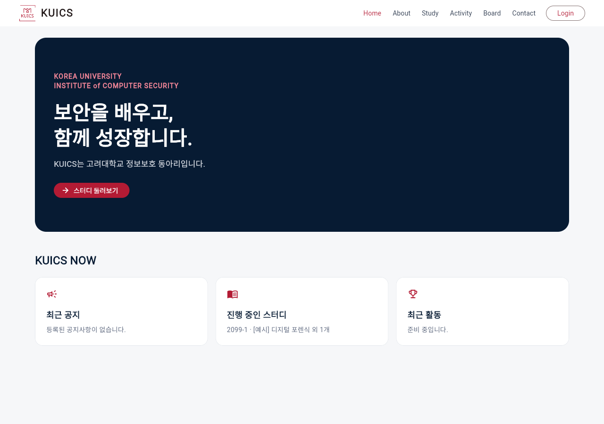
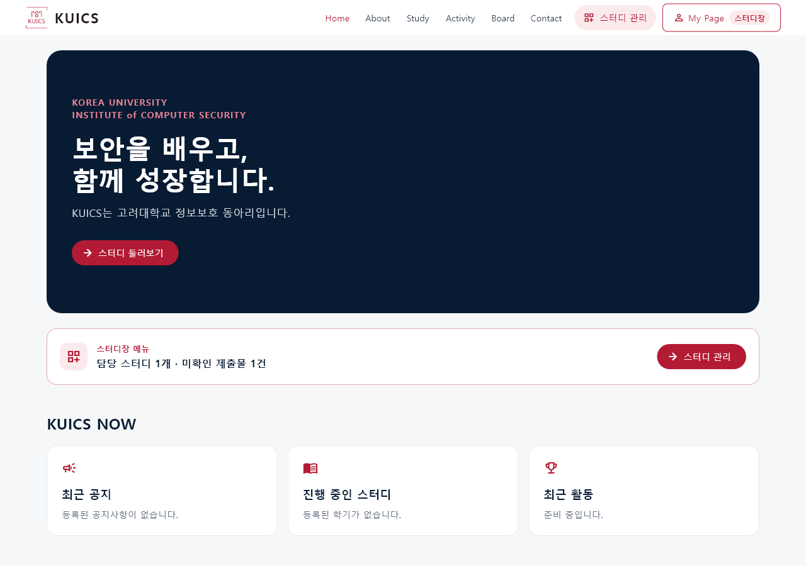
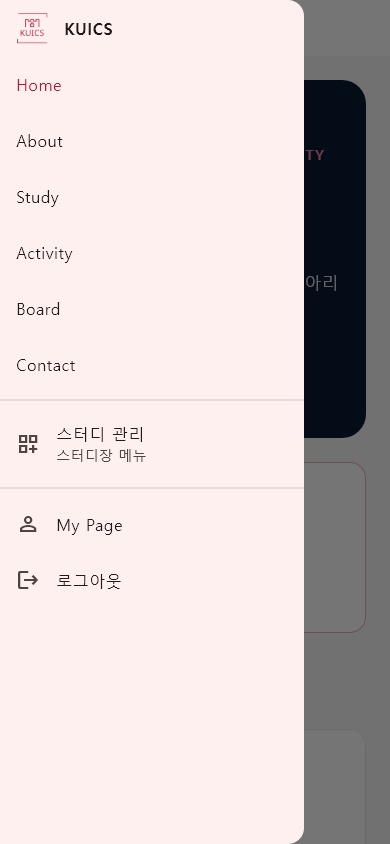
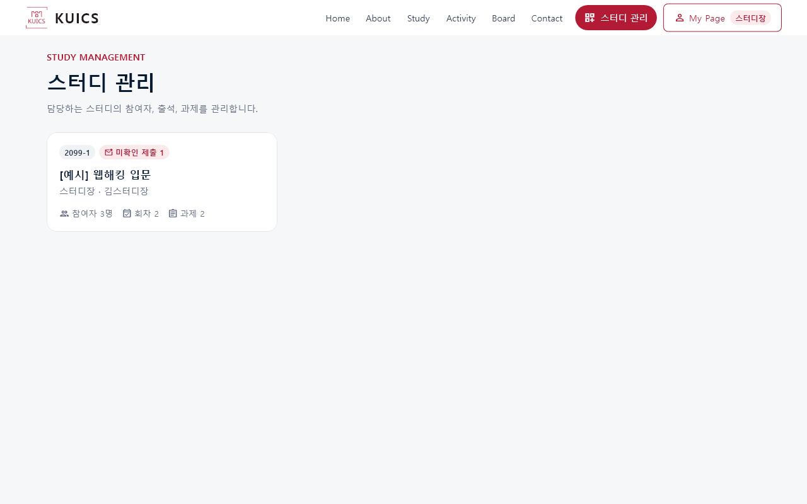
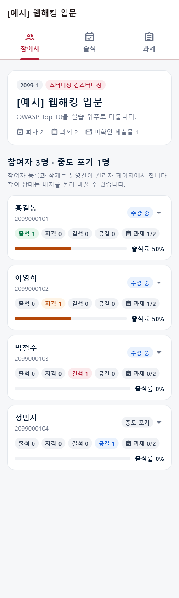
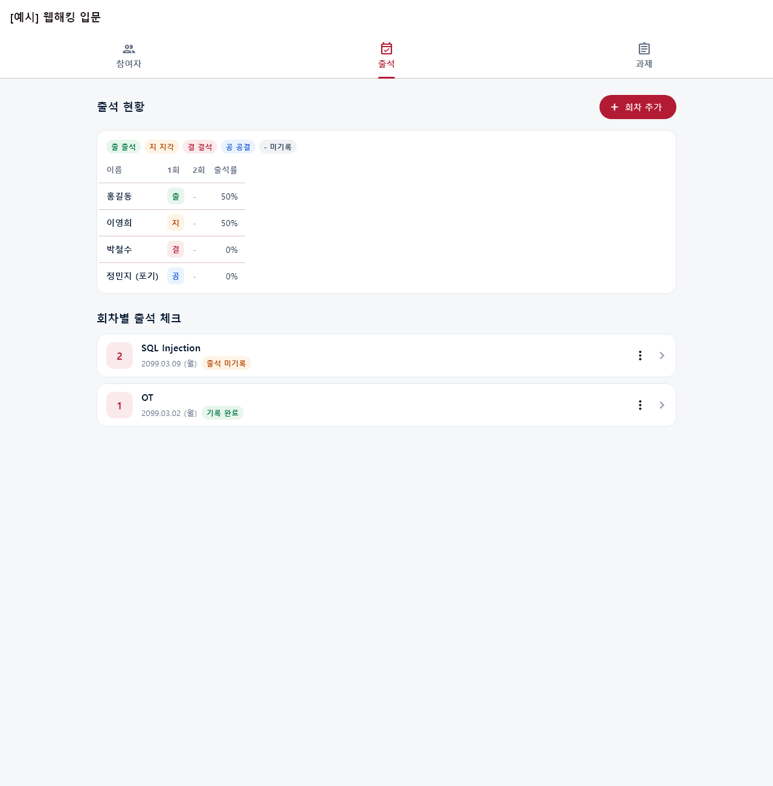
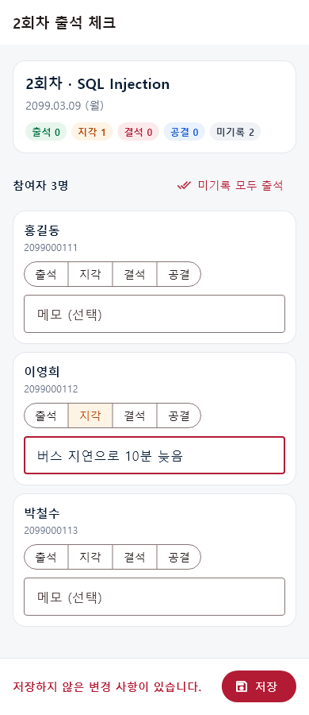
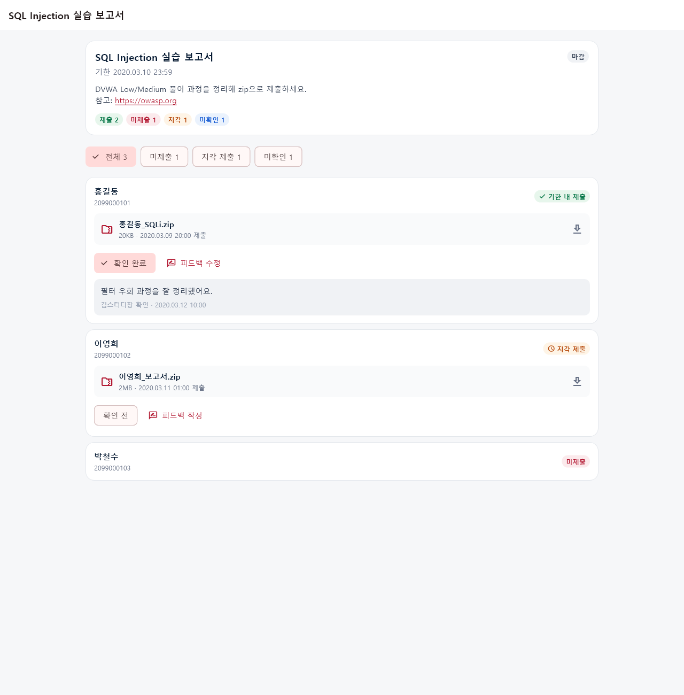
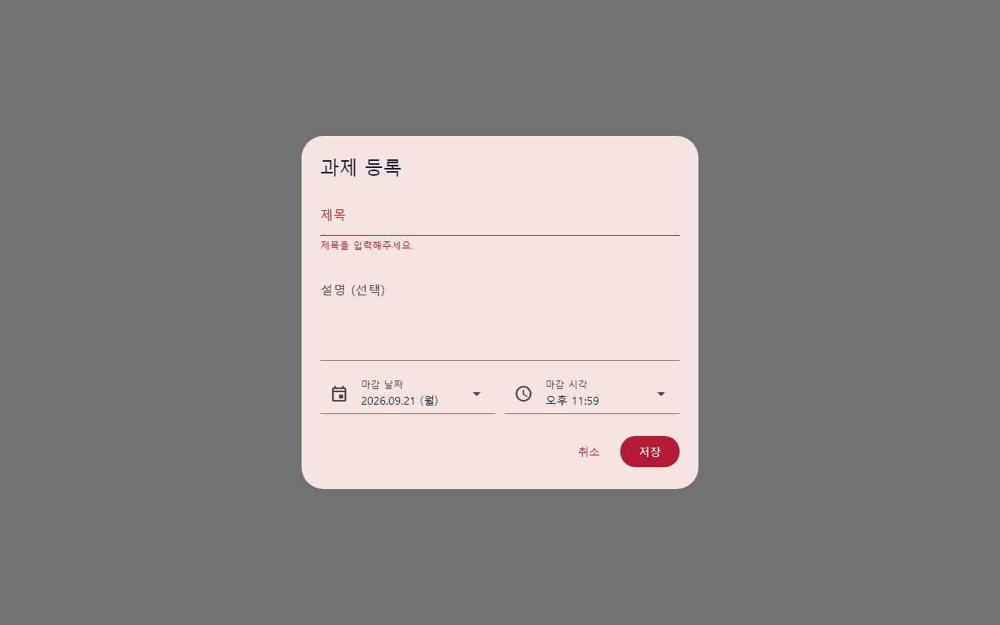
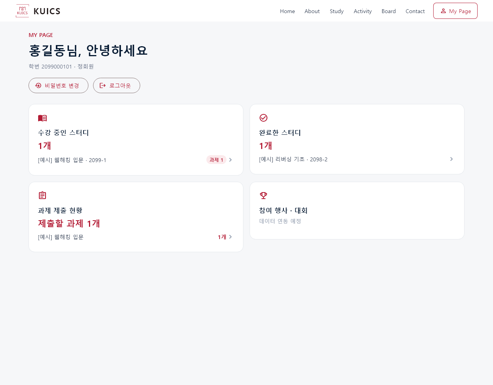
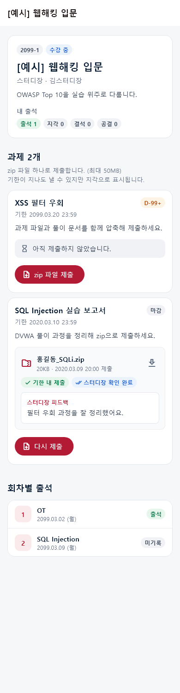
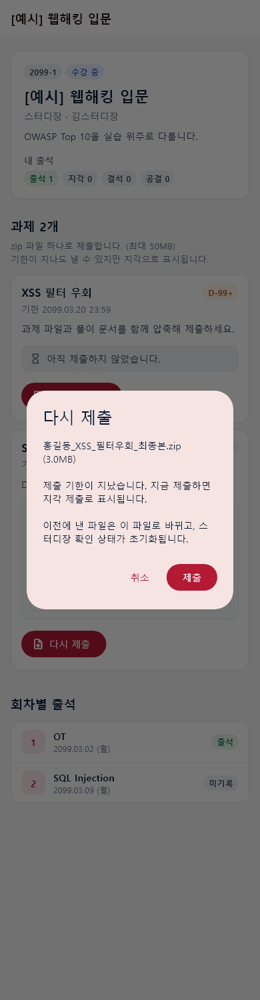
| 방법 | 내용 | 결과 |
|---|---|---|
| Django 테스트 | 권한 매트릭스(비로그인·정회원·담당/비담당 스터디장·운영진), 출석 일괄 저장·삭제·타 스터디 거절, zip 검사(확장자·가짜 zip·용량), 지각 판정, 재제출 교체·파일 삭제, 다운로드 권한, 비밀번호 강제, 오류 형식 | 80개 통과 |
| Flutter 위젯 테스트 | 가짜 API 서버로 등급별 화면, 탭 이동, 출석 저장(한글 메모), 미기록 모두 출석, 저장 전 나가기, 과제 폼 검증, 제출 현황 필터·확인, zip 업로드 요청(한글 파일명·CSRF), 사전 검사, 지각 재제출, 서버 거절, 360px 레이아웃 | 37개 통과 |
| 정적 점검 | manage.py check, makemigrations --check, dart format --set-exit-if-changed, flutter analyze, flutter build web | 모두 통과 |
| 실제 HTTP 점검 | 로컬 서버에 가상 데이터를 넣고 로그인→관리 API→출석 저장→과제 등록→한글 파일명 zip 업로드→재업로드→다운로드 바이트 일치→확인·피드백→Admin 페이지까지 실제 요청으로 확인 | 이상 없음 |
| 실폰트 화면 캡처 | 맑은 고딕으로 33장을 390px·1000~1440px 폭에서 렌더링해 겹침·여백·줄바꿈을 눈으로 확인 | 문제 4건 발견 → 수정 |
| 실제 브라우저 | 릴리스 빌드를 헤드리스 크롬으로 열어 부팅·폰트·다른 포트 API 호출 확인 | 정상 렌더링 |
실행하지 못한 점검 — 이 PC에 Docker가 없어 docker-compose 스택(nginx 경유 업로드 크기·쿠키)은 돌려보지 못했습니다. PostgreSQL 대신 SQLite로만 테스트했습니다. 한글 IME 조합 입력은 자동화할 수 없어 “컨트롤러를 한 번만 만들고 입력 중 재생성하지 않는” 구조로 대비하고, 한글 문자열 입력·전송은 테스트로 확인했습니다. 실제 브라우저에서 로그인 후 파일 선택창을 여는 과정은 사람이 한 번 확인해야 합니다.
| # | 증상 | 원인 | 수정 |
|---|---|---|---|
| 1 | 과제 등록 창을 열면 레이아웃 예외로 창이 깨짐 | AlertDialog가 내용의 고유 크기를 재는데 안에 LayoutBuilder를 씀 | 화면 폭 기준 분기로 교체 (push 전 발견, 72dd723) |
| 2 | 저장·확인 처리·제출에 성공해도 “…하지 못했습니다” 안내가 뜸(디버그 모드) | setState(() => future = …) 콜백이 Future를 돌려줘 Flutter가 예외를 던짐. 기존 스터디 페이지 재시도에도 있던 문제 | 블록 본문으로 변경 7곳 15c95f6 |
| 3 | 내용이 적은 페이지가 화면 가운데 좁은 기둥으로 몰림. 기존 게시판 빈 목록에도 있던 문제 | PageFrame이 자식 폭만큼 줄어듦 | 폭을 채우도록 수정 dabfe78 |
| 4 | 휴대폰에서 홈 문구가 “보안을 배우 / 고,”처럼 끊김 (기존 문제) | 390px 폭에 42px 제목·40px 여백 | 600px 미만에서 글자·여백 축소 dabfe78 |
| 5 | 스터디장 로그인 시 1280px에서 상단바 제목이 넘침 | 관리 버튼·배지로 메뉴가 넓어짐 | 제목이 줄어들 수 있게 하고 전환 폭 1040px 72dd723 |
| 6 | 참여 상태 PATCH가 URL의 스터디 ID를 무시 (기존 문제) | 쿼리셋을 스터디로 거르지 않음 | 스터디로 필터 905ed64 |
| 7 | 초기 비밀번호를 같은 값으로 “변경”해 강제를 우회할 수 있음 | kuics!학번이 조합 규칙을 만족 | 현재 비밀번호와 같으면 거절 3a5b9bf |
| 8 | 게시판에서 모집공고를 골라도 제목이 “공지사항”으로 고정 (기존 문제) | 제목 문자열 상수 | 분류에 따라 제목 변경 5761f8f |
커밋 이력 주의 — 72dd723(관리 화면 feat)은 feat/fix를 나누는 과정에서 두 파일의 변경 조각이 잘못 들어가 그 커밋만 단독으로는 빌드되지 않습니다. 바로 다음 커밋 dabfe78부터 정상이며, 이미 push한 이력을 강제로 고치지 않았습니다. git bisect 시에는 이 커밋을 git bisect skip하세요.
python manage.py migrate (studies.0003 — 회차·출석·과제·제출 테이블 생성, 쓰지 않던 AssignmentSubmit 테이블 삭제). Render는 빌드 명령에 포함되어 자동, 전용 서버 compose도 자동.flutter pub get (file_picker, flutter_localizations 추가). 백엔드 추가 패키지 없음.SUBMISSION_MAX_BYTES 설정. 전용 서버는 frontend/nginx.conf의 client_max_body_size도 같이 조정. Vercel 경유 한도는 확인 필요.dev_tweho → main PR: README 규칙상 리뷰어 1명이 필요한데 현재 단독 개발이라, 규칙을 “단독 기간에는 자체 점검 후 병합”으로 바꿀지 정해야 합니다.go_router): 지금은 새로고침하면 홈으로 돌아가고, 과제·스터디 화면 링크를 공유할 수 없습니다. 스터디장이 과제 링크를 공지에 붙이기 어렵습니다.docker-compose.prod.yml + HTTPS + media_data 볼륨 백업 절차, CSRF_TRUSTED_ORIGINS에 포트 포함 여부 점검.board_page.dart의 날짜 표기 함수가 format.dart와 중복 → 통일.api_client.dart가 커지는 중 → 인증·스터디·관리 영역별로 나누기.frontend/test_screens/, 로컬 제외).py -3.13 -m venv .venv 권장.dev_tweho)| 커밋 | 시각 | 내용 |
|---|---|---|
6627434 | 09-13 23:46 | docs: 스터디장 관리 기능 개발 계획 |
29df4c3 | 09-13 23:50 | refactor: main.dart를 화면별 파일로 분리하고 포맷 정리 |
3a5b9bf | 09-13 23:59 | feat: 비밀번호 변경 전 API·Admin 접근을 서버에서 차단 |
905ed64 | 09-14 00:12 | feat: 회차·출석·과제·제출 모델과 스터디장 관리 API |
72dd723 | 09-14 00:51 | feat: 스터디장 관리 화면 (참여자·출석·과제 취합) — 단독 빌드 불가, 위 주의 참고 |
dabfe78 | 09-14 00:51 | fix: 내용이 적은 페이지가 가운데로 몰리고 모바일 홈 문구가 끊기던 문제 |
15c95f6 | 09-14 01:07 | fix: 목록을 다시 불러올 때 디버그 모드에서 setState 예외로 실패 안내가 뜨던 문제 |
45f8b92 | 09-14 01:07 | feat: 마이페이지 스터디 상세와 zip 과제 제출 |
5761f8f | 09-14 01:19 | fix: 게시판에서 모집공고를 골라도 제목이 '공지사항'으로 고정되던 문제 |
| (이 보고서) | 09-14 | docs: 진행 보고서·확인이 필요한 사항·README 갱신 |
{kind=link}
{kind=link}
{kind=link}
{kind=link}
{kind=link}
{kind=link}
{kind=link}
{kind=link}
{kind=link}
{kind=link}
{kind=link}
{kind=link}